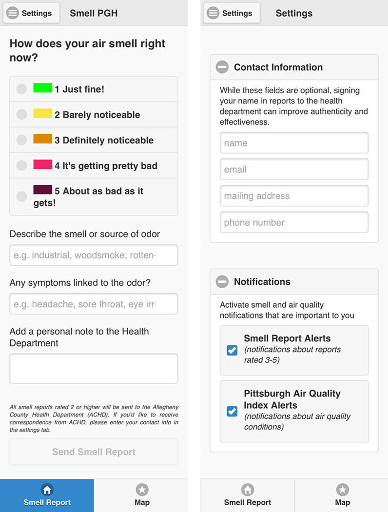

|  |
Submit Smell ReportsInstall the app onto your smartphone or tablet. At the first launch, the app will take you to the "Settings" tab. You can choose to enter personal information, which will go to the Allegheny County Health Department (ACHD) with every smell report you submit, so that they can follow up with you if needed. The "Settings" tab also lets you choose the type(s) of app notifications you want. When you experience a pollution odor outdoors, launch the app and pick a rating for the smell. Adding a description of the smell (e.g. industrial) is highly encouraged, since this can help the county isolate the source. You also have the option to (but are not required to) list symptoms attributable to the experience and send a personal note/question to ACHD. Please only enter information that you are comfortable with sharing anonymously on the public Smell PGH map. Once the information is entered, submit the report. Your report is then pulled together in an email format that includes the location (based on the GPS location of your mobile device), date, time, rating and description (if provided) of the smell, along with personal notes (including symptoms) and/or questions to ACHD (if provided). This email is then sent directly to ACHD. |

|
Visualize Smell ReportsAt the same time your smell report is added to the public Smell PGH interactive map visualization. A triangle icon shows the color of your smell rating that represents your report. Your location is obscured on the map by slightly shifting the coordinates to protect your privacy. Tapping a smell report icon on the map will show the details of the report, including the: date, time, rating, description (if provided), and symptoms (if provided). NO personally identifiable information is shown on the map. In addition, circles on the map indicate federal air quality monitoring stations, where the color denotes the level of fine particulates. Blue arrows that appear near each circle denote the wind direction as reported from that monitoring station. You can explore this map further by panning and zooming. You can also tap on the playback button to animate the smell reports, sensor readings of fine particulates, and wind information over time. The bottom of the visualization features a timeline where you can select different dates to explore and compare. The gray level of each square indicates the number of smell reports rated 3 or higher submitted that day. So, darker colors indicate a higher number of foul odor reports. |